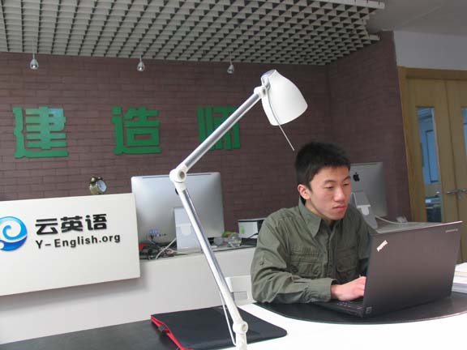

云英语Y-GRE内测产生大陆首个新G语文170满分！
云英语：因学术而改变


稀稀拉拉一屋子，目测智商从110-160不等。领头的是个医生范儿的小伙儿，据说叫李浩。讲解很严肃，讨论很热烈，从哪方面看都不像是一个培训班。
顺便说一句，这底下坐着的都是VB受训出来的，裸考成绩最高165。他叫曹子聪，北大中文系的本科生。之前的半年里，除了VB，他还在学拉丁、希腊和法语，也没做过神马GRE题――VB并不是专为GRE设计的。当然，借用一句话，VB是向下兼容GRE的。
大家都想知道，VB怎么向下兼容GRE，所以就搞了这么个平台。
我们的计划是，在半年之内搞出国内第一批新GRE满分，以正视听。
1.我们做Verbal填空题，是写好了再看选项的。
2.我们做Verbal阅读题，是把全文读懂了再做的。
3.我们做题的时候，理论上是没有生词的。
金时运悲天悯人地感叹，"不懂词源的人儿，怎么能看懂这些句子呢？"。
李浩说，"这就是命"。你知道什么叫极度自负的优越感么？――它扎在心里，向智慧生长，结璀璨之花――其实和GRE成绩原本无关。
做3000道题，这只是一种生存状态。
这是半年前云英语Y-GRE项目低调内测时留下的记录。今天，让我们兑现诺言，留下历史的见证。公元二零一三年三月九日，黄笛（北大哲学系大四学生，云英语VB-005期毕业，Y-GRE内测版第2期成员）第一次正式参加GRE考试，在北外考场考出了V170分，成就新GRE考试大陆地区第一个Verbal满分！http://blog.renren.com/blog/253488021/897505056
半年来，云英语开展了两期Y-GRE平台内测，注册人数共计51人。目前的反馈结果：Verbal平均157.7，Quantitative平均168.4，总分平均326.1。这与我们产品研发的最终目标V160Q169总分329只有3分的差距了。希望到那一天，这样的硬数据能让"阿猫阿狗培训机构"无地自容，从此不要再踏足GRE培训领域。
不客气地说，2011年8月GRE改版后，对英语真实水平的考察已经让所谓的"技巧"、"偏门"再无用武之地，扎扎实实地积累阅读量、提高英文能力才是取得高分的致胜法宝。从构建词汇体系，基于词源理解语义，到积累有效阅读经验，夯实人文基础，完善多学科背景知识，培养图景式阅读习惯，深入语境分析潜音真意，再到提升英文学术能力，直至最后副产物的Verbal 160+，云英语的VB技术和Y-GRE平台已经可以将这一过程缩短到3个月。
我们相信，距离最后可以公开投放市场的完整GRE解决方案，已经不远了。
博客：http://blog.sina.com.cn/s/blog_53839e320101kyx4.html
版权所有 2011-2015 云英语 Y-English All Rights Reserved
地址：北京市海淀区五道口华清嘉园商务会馆802
电话：400-876-3898 010-82863898 82863899 传真：010-82863897